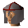
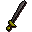
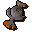

Tower guard

| Config name | tower_guard |
| NPC id | 877 |
| Combat level | 28 |
| Hitpoints | 22 |
| Attack / Strength / Defence | 26 / 26 / 26 |
| Respawn | 100 ticks |
| Options | Talk-to, Attack |
| Wander range | 8 tiles from spawn |
| Max range | 11 tiles from spawn |
| Area folder | area_yanille |
| Defined in | scripts/areas/area_yanille/configs/yanille.npc |
| Bonuses | Attack bonus 8, Strength bonus 8, Stab def 23, Slash def 35, Crush def 28 |
Tower guard
Tries to keep the peace.
Show all 5 spawns on the world map → Open in knowledge graph →
Drops
Drop script: scripts/drop tables/scripts/yanille_soldier_tower_guard.rs2 (specific handler)
Drop table
| Item | Quantity | Rarity | Notes |
|---|---|---|---|
| 9 | 37/128 (28.91%) | ||
| 8 | 1/8 (12.5%) | ||
| 24 | 9/128 (7.03%) | ||
| 6 | 1/16 (6.25%) | ||
 Steel sword | 1 | 3/64 (4.69%) | |
| 4 | 5/128 (3.91%) | ||
| 2 | 1/32 (3.12%) | ||
| 30 | 1/32 (3.12%) | ||
| 12 | 1/32 (3.12%) | ||
 Mind talisman | 1 | 3/128 (2.34%) | |
| 8 | 1/64 (1.56%) | ||
| 4 | 1/64 (1.56%) | ||
| 6 | 1/64 (1.56%) | ||
| 35 | 1/64 (1.56%) | ||
| 1 | 1/128 (0.78%) | ||
| 3 | 1/128 (0.78%) | ||
| 2 | 1/128 (0.78%) | ||
| 2 | 1/128 (0.78%) | ||
| 8 | 1/128 (0.78%) | ||
| 1 | 1/128 (0.78%) |
Locations
| Area | Coordinates | Level | Count | Map |
|---|---|---|---|---|
| Yanille | 2540, 3090 | 0 | 1 | view |
| Yanille | 2545, 3113 | 0 | 1 | view |
| Yanille | 2546, 3116 | 0 | 1 | view |
| Yanille | 2549, 3112 | 0 | 1 | view |
| Yanille | 2554, 3117 | 0 | 1 | view |
Dialogue
PlayerHello. What are you doing here?
Tower guardWe are the tower guards - our business is our own!
Quests
Referenced in scripts
scripts/areas/area_yanille/scripts/tower_guard.rs2scripts/drop tables/scripts/yanille_soldier_tower_guard.rs2scripts/quests/quest_itwatchtower/scripts/quest_itwatchtower.rs2